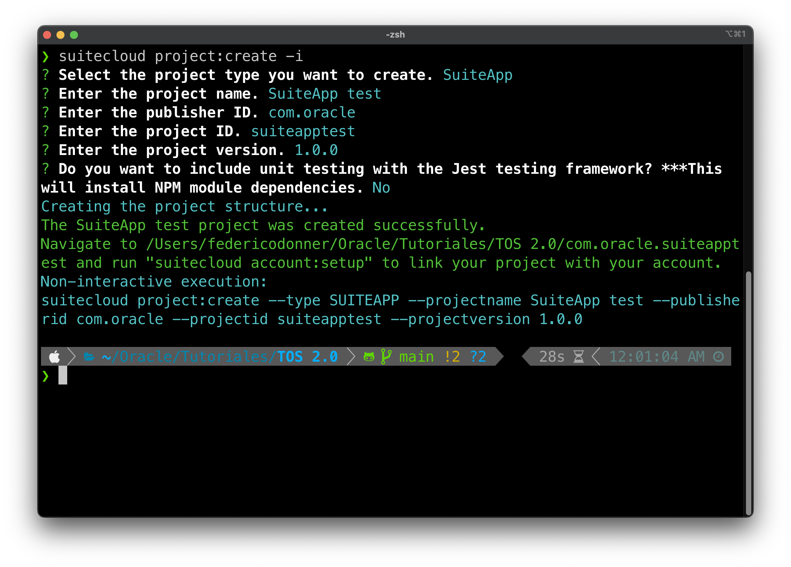
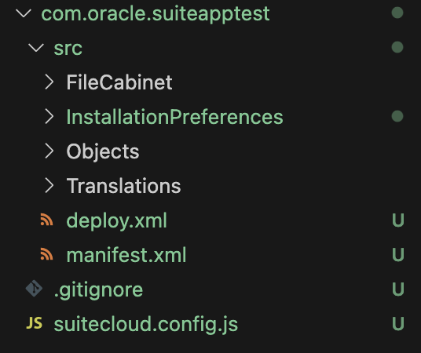

Creating your first project
Using the SuiteCloud CLI we will create your first SuiteApp project. For that, navigate to a new folder and run the command
"-i" tells SuiteCloud that the prompt should be run in interactive mode, which asks the user for details for the project.
We will go over the configurations:
- Project type. Account customizations are meant to be deployed into only one account, whereas SuiteApps are meant to be distributed using the marketplace. Partners develop SuiteApps.
- Project name. This is just for referencing the SuiteApp, it doesn't have any technical meaning.
- Publisher ID. Every partner has a publisher ID that's assinged by SDN. It's used to link them to their SuiteApps. We'll revisit this in another module when explaining how to publish the SuiteApp.
- Project ID. This is the technical name for the SuiteApp, it can't have upper case letters or spaces. We will use it afterwards.
- Project version. Semver of the SuiteApp.
- Install testing tools. SuiteCloud SDK has a testing suite based on Jest. We will not go into it in this tutorial, you can read more here
Running the project:create command creates the file and folder structure for the SuiteApp. We will go over the most important ones, and the ones necessary for this tutorial.
- deploy.xml and manifest.xml. Those files are used when deploying the SuiteApp, both into Test Drive accounts for testing and production accounts for your customers. We don't need to modify their content, the SDK keeps them up to date.
- Objects folder. Here is where we will import all the objects we might need for our SuiteApp. Almost any element that can be created and accessed within NetSuite UI can be imported into a SuiteApp, therefore created inside your customers' account when your SuiteApp is deployed.
- FileCabinet folder. This folder mimics the File Cabinet inside NetSuite. Within this folder there is a SuiteApps folder and inside there you'll find one with the name of your SuiteApp. Once the SuiteApp is deployed, that route will be created in the File Cabinet of the target account and your SuiteApp's files will live there.
NetSuite objects are xml definitions with the appropriate attributes. While it's possible to write them from scratch, in this tutorial we're going to creat them in the UI and import them into the SuiteApp. It's possible that we might need to go back to the UI and delete the object after we have imported it in order to avoid deployment issues.
Once your project is created, continue with the following section.